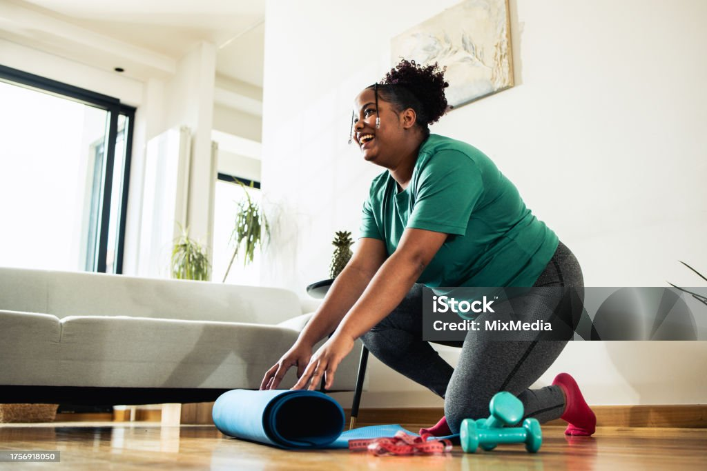

Creating and Maintaining Fitness Goals
Setting personal fitness goals is an essential first step to ensuring success on your fitness journey, but it’s not enough to simply have goals—you need to know how to set them realistically and how to make time in your busy life to achieve them. One of the most effective methods for goal setting is to use the SMART goal framework. SMART stands for Specific, Measurable, Achievable, Relevant, and Time-bound. This means your goals should be clearly defined (specific), measurable so you can track progress (measurable), realistic given your current abilities (achievable), aligned with your personal values and needs (relevant), and set with a clear deadline (time-bound). For example, instead of saying "I want to get fit," a SMART goal would be "I want to exercise for 30 minutes, three times a week for the next month." Once you’ve set clear goals, the next step is figuring out how to make time for them. This can be challenging, especially if you have a busy schedule. Start small and realistic—aim for 15-20 minutes a day at first. Gradually increase your workout time as you become more comfortable. Scheduling your workouts like appointments can also help; treat them as non-negotiable. You can also use spare moments throughout the day for exercise—like doing a quick workout during your lunch break or fitting in a short routine in the morning before work. Combining activities is another great way to find time, like taking the stairs instead of the elevator or using your commute for light walking or cycling. Remember, it’s about consistency over perfection. Even 10 minutes of exercise a day is better than none, and over time, these small efforts will add up to significant results.
